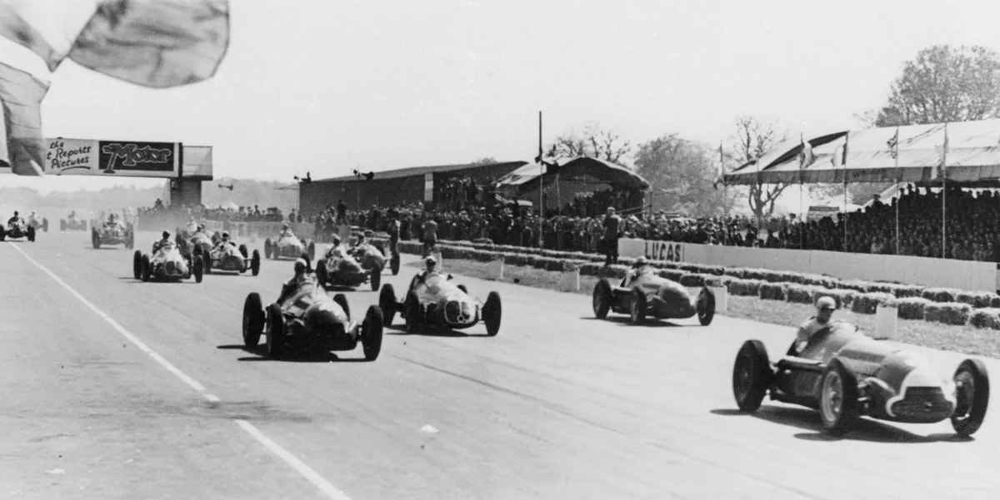

Destacados


Las carreras de Gran Premio tienen sus raíces en las carreras automovilísticas surgidas en Francia en 1894. En un principio se trataba de eventos individuales, sin conexión y en caminos de tierra, prácticamente sin ninguna limitación. Antes de la Segunda Guerra Mundial se habían establecido las reglas para las competiciones de Grand Prix, que debían obedecer tanto autos como pilotos. Estas reglas, conocidas en su conjunto como Fórmula, no se concretaron hasta que en 1947 la antigua AIACR se reorganizó, pasándose a llamar la Federación Internacional del Automóvil, conocida por las siglas "FIA".
Con sede central en París, al final de la temporada de 1949 anunció que para 1950 unirían varios Grandes Premios nacionales para crear un Campeonato Mundial de Pilotos, por lo que en 1950 se celebró el primer campeonato de Fórmula 1. El primer Gran Premio se realizó el 13 de mayo de 1950 en el circuito de Silverstone y fue ganado por el italiano Giuseppe Farina, consiguiendo además el campeonato de 1950 tras vencer a su compañero de equipo, el argentino Juan Manuel Fangio.
Equipos Destacados
Equipos destacados por sus logros, campeonatos e innovaciones durante su trayectoria.
Pilotos Destacados
Pilotos destacados por sus logros, campeonatos e influencia en el deporte durante su trayectoria.
Circuitos Destacados
Circuitos destacados por su historia y momentos importantes en el deporte.